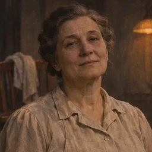
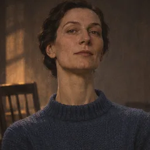
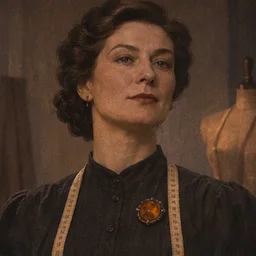
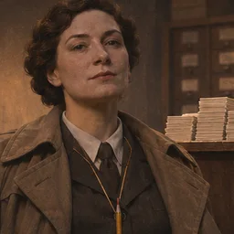
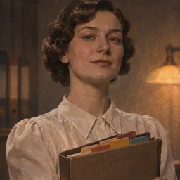

В дождливом Вязовске покупательница приносит картину, которую продали как единственную работу известной художницы. В соседнем окне висит почти такая же весна. Нужно сравнить полотна, посетить мастерские и разобраться, кому действительно продали чужую подпись, а кому только удобное оправдание.

Если партия изменила план
Перед чтением вступления сверьте место героев, присутствующих людей и предметы с итогом прошлого вечера. Если условия встречи отпали, сыграйте последствия там, где находится партия. Событие по расписанию может произойти за кадром. Герои узнают о нём от тех, кто был на месте.
Вечер 6. Если владелец полотна берёт деньги и просит тишины
Спросите, кому принадлежат другие полотна и кто сам разрешил сверку. На дневной свет вынесите только эти картины. В эпилоге отметьте, кого успели предупредить и кто ещё считает свою весну единственной.
Группа отказалась от задания
Покупателей разыскивать не будем. Поможем Тамаре подписать один подлинный образец её работы. Просим Тамару подписать выставленный образец. Образец выставлен с верной подписью. Никто пока не обещал вернуть деньги другим владельцам.
Игроки раскрыли тайну раньше
Сопоставим чек на единственную вещь и авторские экземпляры нескольких заказов, попросим Тамару их опознать. Доступные свидетельства — Чек на единственную весну, Авторский экземпляр трёх заказов. Раисе продали декоративный вариант как единственный оригинал. Чеки соседних покупателей нужно проверять по отдельности. Предъявляем продавцу номера серии, скрыв частные адреса. Проверяем повтор серии и предъявляем продавцу одну подтверждённую претензию. Остальные клиенты решают отдельно.
Партия уступила поле
Витрина осталась за противной стороной, осмотреть её сегодня нельзя. Согласуем, какую строку чека покупатель готов показать. Берём разрешение покупателя на работу с его чеком. Заканчиваем частной сверкой, не заявляя, что проверили всю выставку.
За десять минут до первой игры
- Откройте первый вечер, прочитайте правду мира и участников. Остальные вечера — планы, их исход решают игроки.
- Выберите пакет под фактическое число игроков. Первые три героя — готовое ядро; остальные добавляются по порядку. Возраст игрока не определяет героя.
- Согласуйте темы, длительность и сигнал паузы. Передайте игрокам только players.html; раздатки выдавайте по отдельности после указанного открытия.
- Откройте Мастерскую проекта, создайте личный черновик и импортируйте выбранный JSON через загрузку пакета. Проверьте состав и начало в предпросмотре. Запуск кампании подтверждает ведущий штатным действием.
- Откройте иллюстрацию завязки отдельно. Портреты героев входят в файл для игроков, портреты встречных — в книгу ведущего. Тактические схемы доступны в разделе карт.
Формат и темы
8 вечеров; 180 минут: 15 минут открытия и повторения, три сцены по 45 минут, перерыв 15 минут и завершение 15 минут.
Вязовск — вымышленный город трамваев, проводных телефонов и бумажных заказов. Все художники живы, картины написаны в нынешнем сезоне. Листы персонажей третьего уровня — условные игровые профили: воин означает выдержку, плут ловкость, жрец заботу, волшебник наблюдательность. Заклинаний, ячеек и сверхъестественных способностей нет. Посох обозначает обычную трость; огнестрельное оружие, право и экспертиза искусства этими правилами не моделируются.
Мокрая шерсть, запах мыла и льняного полотна, жёлтый свет примерочных; негромкий стыд людей, которым нравится красивая вещь, но нужен чужой престиж.
- Цена престижа и собственного вкуса
- Соучастие покупателей и пределы возмещения
- Экономическая зависимость без оправдания обмана
- Право любить вещь, происхождение которой оказалось ложным
Границы
- Все герои, персонажи ведущего и безымянные участники старше 21 года; романтические и сексуальные сцены отсутствуют.
- Нет сексуального насилия, подробностей телесных повреждений, принуждения к воспоминаниям игрока или процедур изготовления подделок и финансовых преступлений.
- Перед игрой согласуйте допустимость долгов, публичного стыда и давления работодателя. Сигнал «пауза» останавливает сцену; спорный элемент заменяется без требования объяснений.
- Стычки только необязательные, с нелетальным намерением и явным выходом. Любое признание добровольно; молчание не доказывает вину.
Люди за столом
- Первые три героя дают работоспособную группу. Их функции доступны любому персонажу; отсутствие остальных не закрывает улику, переговоры или финальное решение.
- В начале каждой сцены меняйте первого говорящего. Принимайте письменный выбор и право пропустить ход; вопрос персонажу никогда не требует личной исповеди игрока.
- При разделении партии задавайте каждой подгруппе один вопрос, играйте по пять минут и возвращайте всех к общему столу сравнения. Непоказанные другой группе сведения остаются частными до пересказа.
- На большом столе распределяйте наблюдение, запись, вопросы, проверку условий, заботу о свидетеле и предложение решения. После одного действия на человека ведущий одновременно разрешает последствия, без соревнования на скорость речи.
- При отсутствии игрока герой занимается согласованной бытовой задачей. Ведущий отдаёт доступные группе документы, но не решает личную дилемму отсутствующего героя и не делает его виновником.
- Ведите три колонки: наблюдаемое, слова свидетелей, выводы. Улики выдаются за описанное разумное действие; проверки меняют время, доверие или цену доступа, но не существование основной информации.
Масштабирование группы
3 игроков
Один сравнивает предметы, второй беседует, третий записывает противоречия; меняйте обязанности между сценами. Ведущий сводит встречи в одно место по договорённости, не добавляет спутника-решателя. В стычке два противника, по 12 хитов.
4 игроков
Добавьте заботу о владельцах и согласие на осмотр. Две пары получают по одной задаче и встречаются после первого обмена. В стычке три противника, по 14 хитов.
5 игроков
Пятый участник проверяет формулировки предложений и кому достанется возмещение. Каждый получает слово до принятия общего решения. В стычке три противника, по 16 хитов.
6 игроков
Три пары изучают материал, происхождение и заявления покупателей; ведущий чередует пятиминутные отрезки. Возвращение обязательно перед передачей документов. В стычке четыре противника, по 18 хитов.
7 игроков
Седьмой участник следит за отсутствующими согласиями и последствиями для работников. Две тройки и связной обсуждают решение все вместе, без личной власти связного. В стычке пять противников, по 20 хитов.
8 игроков
Четыре пары готовят осмотр, разговор, маршрут возвращения и варианты сделки. Сверка занимает общий круг с одним предложением от каждого. В стычке шесть противников, по 22 хита; цель остаётся одной, поле не расширяется.
Первое чтение вслух
Вязовск в апреле пахнет мокрой шерстью и мылом. Город лежит на пологих холмах, трамваи огибают их кольцами и звенят на каждом повороте, а вдоль главных улиц тянутся выставочные окна, где этой весной показывают живопись нынешнего сезона. Здесь всё заказывают на бумаге — платье, раму, доставку, звонок по проводному телефону, — и здесь любят повторять, что весенние дожди задерживаются до лета. Каждый год это оказывается правдой. Четверг, 19 апреля, шесть вечера. Дождь покрывает стеклянную пристройку прачечной мелкими косыми дорожками. За перегородкой гудят сушильные барабаны, на длинном столе лежит стопка сухих полотенец, на плитке посвистывает чайник, и пахнет крахмалом и горячим железом утюгов. Хозяйка, Раиса Антипова, — женщина в светлой рабочей блузе, с тихим голосом, — снимает чужой мокрый плащ со стула, вешает его на крючок и только потом ставит на стол завёрнутую в бумагу картину. Она отгибает край обёртки: жёлтый сад, три белых бутона на тёмных стеблях, густой тёплый свет, как в комнате, где только что задёрнули шторы. «Мне нравится эта весна. Но мне обещали единственную». Она кивает на окно. Через улицу, в освещённой витрине Зимнего салона, за приподнятыми плотными шторами висит почти такой же жёлтый сад. Мимо проходит трамвай, и на миг оба сада отражаются в мокром стекле рядом, словно в зеркале. Раиса кладёт возле картины сложенный пополам кремовый чек. «Я купила её для нашей приёмной, чтобы людям было на что смотреть, пока они ждут бельё. Помогите понять, что именно я купила. И кто ещё узнает об этом слишком поздно».
Правда мира · только ведущему
- Дилер Аркадий Сухов сознательно продавал декоративные варианты Тамары Ситник как единственные новые оригиналы Нины Рябцевой. Он знал автора и условия заказов; преступление не случайная ошибка каталога. Подробности изготовления подделок игре не нужны.
- Эдуард Бирк и Лидия Крупина знали, что покупают работы Тамары с чужим престижным именем. Они лично выбирали изменения для своих комнат и помогали Сухову показывать покупки как независимое признание таланта Нины. Раиса Антипова и следующий приглашённый покупатель Семён Жданов этого не знали.
- После жалобы Раисы Эдуард и Лидия объявили себя обманутыми. Их требования полного возмещения позволили бы сохранить покупательскую репутацию за счёт денег, которых не хватит на все возвраты. Каждый вправе передумать; позднее сожаление не делает прежнее знание отсутствующим. Лидия разрешила Сухову предложить её картину следующему покупателю, но передача полотна и условия возврата ещё требуют её отдельного согласия.
- Сухов хотел сохранить салон и собственную роль человека, определяющего вкус. Он презирал клиентов за желание купить громкое имя и использовал это как оправдание. Его аренда действительно подорожала, но ни арендодатель, ни художницы не требовали обмана.
- Тамара открыто делала декоративные варианты со своим именем и считала их отдельными заказами для интерьеров. Она знала о покупке Эдуарда и Лидии, но не о подмене авторства в продаже Раисе. Нина не передавала Сухову права подписывать чужие работы своим именем и не состоит с ним в тайном сговоре.
- На пятницу, 27 апреля, назначен частный показ Семёну в Зимнем салоне. Это намерение Сухова, а не неизбежное будущее. Герои могут предупредить Семёна заранее, добиться добровольной сверки, отказаться от сделки или выбрать степень огласки. Убийства, тайного склада похищенного и единственного всеведущего эксперта здесь нет.
Досье дела · только ведущему
Кто сознательно продавал декоративные варианты как единственные оригиналы и какие покупатели знали правду раньше, чем объявили себя обманутыми?
Виновник: Аркадий Сухов.
Сухов хотел сохранить салон и власть над чужим вкусом после подорожания аренды. Он решил, что покупателям нужна престижная подпись сильнее, чем честное происхождение, и превратил этот цинизм в оправдание. Эдуард и Лидия покупали общественное признание; теперь хотят вернуть деньги и прежнюю невиновность одновременно.
Сухов заказал у Тамары открыто названные декоративные варианты, затем давал новым покупателям несовместимые с известным ему происхождением обещания. Два осведомлённых клиента помогали публично подтверждать ложное авторство. После первых сомнений они подписали неправдивое заявление о неведении. Лидия разрешила предложить её полотно следующему клиенту, но окончательные условия и перемещение пока не согласованы. Это вымышленная схема обмана, без описания способов изготовления подделок, документов или сокрытия денег.
Что произошло до начала игры
- 29 марта, за три недели до начала. Нина показала свой нынешний жёлтый сад с четырьмя целыми бутонами на открытом вечере. Тамара видела этот мотив и позднее честно назвала свои работы декоративными вариантами. Свидетели: Нина Рябцева, Тамара Ситник.
- 31 марта. Нина письменно разрешила Сухову показывать почтовую карточку, отказав в продаже её оригинала и в представлении чужих вариантов её работами. Сухов получил ответ. Свидетели: Нина Рябцева, Аркадий Сухов.
- 2 апреля. На открытом посещении мастерской Тамара назвала своё авторство и характер декоративных вариантов. Эдуард и Лидия пришли и оставили подписи в книге посетителей. Свидетели: Тамара Ситник, Эдуард Бирк, Лидия Крупина.
- 3 апреля. Сухов принял три подписанных заказа Тамары; Бирк и Крупина подтвердили, что знают её авторство. В багетной Бирк и Сухов подписали макет узкого простенка. Лидия отдельно согласилась с предложенным ей публичным именем Нины. Свидетели: Аркадий Сухов, Тамара Ситник, Эдуард Бирк, Лидия Крупина, Борис Орлов.
- 9 апреля. Лидия получила охристый сад и заплатила 1100 рублей. Её личная заявка и полученный салоном экземпляр остались у разных владельцев. Свидетели: Лидия Крупина, Аркадий Сухов.
- 10 апреля. Сухов продал Раисе вариант с тремя белыми бутонами за 1200 рублей, письменно обещав единственный оригинал Нины. Раиса не знала о Тамаре и не осматривала ярлык за рамой. Свидетели: Аркадий Сухов, Раиса Антипова.
- 11 апреля. Бирк получил свой узкий сад с объявленным на карточке доставки именем Тамары; ранее согласованная цена составляла 900 рублей. Клавдия видела описание и подпись получения, но не содержимое пакета. Свидетели: Эдуард Бирк, Клавдия Зуева.
- 12 апреля. Бирк разрешил публичный показ покупки с карточкой, на которой он и Сухов подписали ложное имя Нины. Ольга сохранила распространённый посетителям лист в открытом альбоме. Свидетели: Эдуард Бирк, Аркадий Сухов, Ольга Малкова.
- 13 апреля. Сухов направил Семёну ложное предложение охристого сада. Ольга письменно попросила исправить авторство и получила подписанный отказ. Семён приглашение прочёл, но ничего не оплатил. Свидетели: Аркадий Сухов, Ольга Малкова, Семён Жданов.
- 15 апреля. После частного вопроса Раисы о похожем саде Эдуард и Лидия подписали общее заявление, будто автор Тамара им прежде не был известен. Копию для подписи Раисы передали в прачечную. Лидия разрешила предложить свою картину следующему покупателю, не согласовав передачу. Свидетели: Эдуард Бирк, Лидия Крупина, Аркадий Сухов.
- 16 апреля. Сухов составил лист свободного остатка 1600 рублей для возможных добровольных возвратов. Реальные дополнительные средства неизвестны; герои не получают власти над его кассой. Свидетели: Аркадий Сухов, Ольга Малкова.
- 19 апреля до 18 часов. Раиса попросила знакомых прийти в Стеклянную приёмную. Ни расследование, ни отмена продажи, ни возврат денег ещё не произошли. Свидетели: Раиса Антипова.
Независимые пути доказательства
Предметы и лично выбранный размер
Наблюдения: ярлык называет автора и заказчика; подписанный макет связывает осведомлённых Бирка и Сухова с вариантом Тамары; обрезанный бутон и две ступеньки связывают макет с выставленной покупкой. Независимая карточка публичного показа содержит другие имя и обещание под их подписями. Вывод: оба сознательно представляли конкретную выбранную вещь ложным оригиналом. Ни вкус специалиста, ни признание Бирка для цепочки не требуются; знания Лидии эта ветка отдельно не доказывает.
Улики: Ярлык за рамой; Макет узкого простенка; Сад с обрезанным бутоном; Карточка образцового покупателя.
Приёмка, продажа и позднее неведение
Наблюдения: Сухов принял известные ему работы Тамары; в чеке на тот же номер и описание он обещает Раисе Нину. Датированные подписи Бирка и Крупиной подтверждают прежнее знание авторства, противореча их позднему подписанному заявлению. Вывод: ложь продавца намеренна, а двое требующих возврата неверно описывают свою невиновность. Это не юридическое решение о правах на деньги. Карточка доставки может усилить хронологию, но не нужна для полноты маршрута.
Улики: Авторский экземпляр трёх заказов; Чек на единственную весну; Заявление без прошлого.
Частный вкус и публичное имя
Наблюдения: личная заявка Крупиной выбирает Тамару ради цвета и принимает предложенное Суховым чужое имя; образец и овал обозначают конкретную вещь. Полученное смотрительницей распоряжение прямо противопоставляет настоящего автора публичному обещанию. Независимо полученное Семёном предложение повторяет ложь до оплаты. Вывод: Сухов и Крупина сознательно согласовали ложное представление, которое угрожает следующему клиенту. О выборе Бирка эта цепочка без других улик не говорит.
Улики: Образец к янтарной портьере; Указание смотрительнице; Приглашение к ещё не сделанной покупке.
Подозреваемые
Аркадий Сухов
Сохранить салон, высокие цены и репутацию человека с безошибочным вкусом.
Его подписи связывают известное настоящее авторство с ложными продажей, публичной карточкой и указанием смотрительнице.
Раскаяние, подорожание аренды и согласие вернуть деньги не опровергают прежнее знание. Одного ярлыка без цепочки недостаточно для обвинения именно Сухова; нужны сопоставимые принятые им обещания и сведения.
Тамара Ситник
Получить дорогие заказы и признание, используя известный мотив.
Её имя на оборотах и похожие картины в мастерской легко принять за доказательство всей схемы.
Открытое приглашение и её собственные приёмные листы прямо называют автора и декоративный характер. Нет факта, что она давала Раисе ложное обещание или знала о нём. Истина ведущего: в обмане покупателей она не участвовала.
Нина Рябцева
Получать доход от многочисленных вариантов, сохраняя видимость редких оригиналов.
Её имя и знакомый мотив встречаются на нескольких продажных карточках.
Ранний ответ салону ограничивает разрешение почтовой карточкой и отвергает чужое авторство; оригинал остаётся у неё. Сходство мотива не доказывает согласия на схему. Истина ведущего: Нина в ней не участвует.
Ольга Малкова
Сохранить работу и обслуживать дорогие частные показы.
Она хранит карточки с ложными именами и встречает покупателей.
Запрос об исправлении и подписанный отказ показывают, что решение принял Сухов. Она несёт ответственность за своё молчание, но не придумала схему и не знает всех её участников; нельзя переводить на неё всю вину.
Эдуард Бирк
Сохранить статус знатока, а затем вернуть деньги как невиновный.
Личный выбор автора на макете несовместим с поздним публичным именем и заявлением о неведении.
Он действительно платил за картину; это не оправдывает ложные слова о своей осведомлённости. Его участие не доказывает, что он организовал продажи Раисе или знал условия Лидии.
Лидия Крупина
Украсить ателье престижным именем и не потерять доверие клиентов при возврате.
Личная заявка принимает чужое имя, а позднее заявление отрицает известное ей авторство.
Право передумать и действительная уплата 1100 рублей сохраняются. Они не делают ложное заявление истинным и не доказывают, что Лидия знала о каждой другой продаже.
Проверяемые ложные версии
Тамара сама тайно выдавала себя за Нину и обманула даже продавца.
Её открытые приглашения и принятые Суховым документы называли автора до продаж. Критиковать сходство картин можно, но тайного самозванства из этого не получается.
Проверка: Открытое приглашение Тамары; Авторский экземпляр трёх заказов.
Все подписи — обычные опечатки смотрительницы, а согласованная серия действительно принадлежит Нине.
Нина заранее ограничила разрешение почтовой карточкой. Ольга запросила исправление, а Сухов письменно велел сохранить ложное имя. Ошибка чтения не объясняет два осознанных ответа.
Проверка: Ответ об одной почтовой карточке; Неисправленная подпись.
Все требующие возврата одинаково не знали настоящего автора.
Ранние подписи Бирка и Крупиной и позднее заявление несовместимы. Раиса в ранних приёмных листах не участвовала; знание двух покупателей нельзя перенести на неё.
Проверка: Авторский экземпляр трёх заказов; Заявление без прошлого; Чек на единственную весну.
Если расследование зашло в тупик
- Ложное обвинение Тамары или Нины: человек прекращает личный визит и просит частного исправления. Копии собственных разрешённых бумаг остаются доступны через Раису или Бориса. Герои могут отозвать конкретную ошибочную фразу перед теми, кто её слышал; доверие восстанавливается не автоматически, но расследование продолжается.
- Потерянная улика: не создавать подложный заменитель. Владелец запрашивает свой дубликат; если он недоступен, группа полностью проходит другую из трёх независимых цепочек. При сомнении в подписях участники могут добровольно сверить встречные экземпляры; отказ снижает уверенность, а не доказывает вину.
- Несговорчивый свидетель: уважать отказ в визите и чужую почту. Материальная цепочка имеет макеты и публичный альбом, договорная — авторские экземпляры и письмо самой Раисе, вкусовая — отдельную заявку и приглашение получателя. Если целая цепочка закрыта согласиями, остаются другие; всеобщий добровольный отказ допускает честно ограниченный вывод.
- Раннее предупреждение Семёна: сразу дать ему выбрать отмену или информированную сверку. Оставшиеся встречи посвящаются возвратам, согласиям и формулировкам раскрытия. Не воскресить отменённую продажу ради запланированного финала.
- Недостаточно доказательств к частному показу: предъявить только наблюдаемое расхождение и попросить отложить оплату. Семён может отказаться. Не заставлять Сухова признаться, не объявлять группу победителем и не переносить вину на удобного нового подозреваемого.
Восемь вечеров
- 1. Два жёлтых сада — Установить точное обещание покупательнице, получить первое предметное противоречие и выбрать добровольный путь проверки.
- 2. Варианты одного утра — Отделить изготовление декоративной работы от обмана о её авторстве и получить два независимых вида раннего выбора покупателей.
- 3. Узкий простенок — Завершить предметную цепочку сознательного ложного представления и проверить альтернативу об авторизованной серии.
- 4. Обманутые по записи — Разобраться, какие требования основаны на ложном рассказе о прошлом, не превращая установление соучастия в автоматическое решение о деньгах.
- 5. Вежливая инструкция — Проверить намеренное продолжение обмана и дать следующему покупателю возможность принять решение до оплаты.
- 6. Кому вернут весну — Сформулировать выполнимые добровольные варианты возмещения и раскрытия, различая доказанные суммы, заявленные ограничения и личные решения.
- 7. Дневной свет — Подготовить разрешённое сравнение, проверить силу собственных утверждений и выбрать реальную степень будущего раскрытия.
- 8. Весна без чужого имени — Разыграть решение следующего покупателя, конкретное раскрытие и добровольное возмещение; завершить личные вопросы героев без обязательной победы.
Места
Вязовск
Город пологих улиц, трамвайных колец и выставочных окон, где апрельские дожди задерживаются до лета. Вязовск живёт бумажными заказами и проводными телефонами, а горожане сверяют время по трамвайным звонкам. Каждую весну салоны выставляют живопись нынешнего сезона, и о новых картинах в очередях спорят так же охотно, как о погоде. Повесить дома работу известного местного мастера здесь престижно, а признаться, что выбрал картину по цвету, почему-то неловко.
Стеклянная приёмная
Пристройка прачечной Раисы: длинный стол, сухие полотенца, чайник и окно напротив художественного салона. Стеклянные стены всегда чуть запотевшие, за перегородкой гудят сушильные барабаны, пахнет крахмалом и горячим железом. Вдоль стены тянется тёплая труба, над которой посетители сушат рукава. Здесь ждут своё бельё соседи со всей улицы, и Раиса хотела, чтобы им было на что посмотреть.
Зимний салон
Тёплая галерея с плотными шторами, переносными стойками и отдельной комнатой для спокойного выбора картины. Ковры глушат шаги, пахнет мокрыми пальто и полированным деревом, у входа на пюпитре лежит открытый альбом прошлых показов. Цен на стенах нет: о деньгах здесь говорят только в отдельной комнате. В Вязовске шутят, что в Зимний салон заходят за картиной, а выходят с чужим мнением о своём вкусе.
Мастерская Тамары
Светлый верхний этаж над швейной мастерской; бумажные макеты соседствуют с подписанными декоративными этюдами. Снизу доносится ровный стрёкот швейных машин, большие окна выходят на крыши, к стенам приколоты картонные контуры комнат и простенков. Чашки здесь ставят на отдельный подоконник, подальше от бумаги. На столике у входа лежат простые листки с приглашением в открытые часы.
Мастерская Нины
Низкое помещение с широким столом, удобными стульями и незакрытым полотном с жёлтым садом у стены. Хозяйка разворачивает стулья к окну, прежде чем предложить гостям сесть, потому что о живописи, по её словам, нельзя говорить спиной к свету. Пахнет скипидаром и яблоками из корзины на подоконнике. У двери лежит книга посетителей, в которой расписываются все, кто приходил на открытые вечера.
Багетная Орлова
Пахнущая деревом мастерская; вдоль стены стоят угловые образцы рам, мерные полосы и подписанные картонные макеты. На верстаке клей греется в жестяной банке, под ногами шуршит стружка. По обычаю багетной утверждённые заказчиками макеты хранят до закрытия сезона, и хозяин может найти любой из них по номеру за минуту. Из окна видно трамвайное кольцо и стойку посыльных.
Гостиная Бирка
Квартира с узким простенком, низкой софой и картиной, подогнанной под свет от зелёного торшера. Хозяин держит магазин светильников, и в гостиной их не меньше шести: настольные, напольные, под абажурами разных цветов. Узкий простенок между двумя окнами словно нарочно сделан под одну картину. Гостей здесь первым делом просят сесть туда, откуда свет падает правильно.
Примерочная Крупиной
Закрытая примерочная взрослого модного ателье; в зеркале отражаются охристый сад и тяжёлая янтарная портьера. Пахнет отпаренной шерстью, мелом и булавками, на бархатной скамье ждут заказчицы, а измерительные ленты висят на крючках ровно, как вожжи. Хозяйка подбирает свет и ткань под цвет лица каждой посетительницы и любит повторять, что в этой комнате никто не должен выглядеть усталым.
Стойка доставки
Крытая стойка посыльных у трамвайного кольца, где отправители сверяют номера пакетов на бумажных карточках. Под навесом стоят велосипеды посыльных, на стойке ровными стопками лежат карточки, а диспетчер пишет карандашом на нитке. Здесь строгое правило: копию карточки выдают только отправителю или получателю, и никакие уговоры в очереди его не меняют.
Комната дневного света
Сдаваемая на часы пустая комната: большое северное окно, три мольберта и стол без украшений. Её снимают мебельщики, портные и покупатели картин, которым нужен ровный свет без солнечных бликов. На стенах нет ни одной вещи, чтобы ничто не спорило с цветом. Хозяин дома любит говорить, что при северном свете не врёт ни ткань, ни краска.
Раиса Антипова

58 лет. Женщина в светлой рабочей блузе, с тихим голосом и привычкой убирать мокрые вещи с чужого стула. Совладелица прачечной; купила жёлтый сад для общей приёмной и теперь сомневается в обещанном авторстве.
Место: Стеклянная приёмная
Намерение
Понять, за что заплатила, и самой выбрать, сохранить ли понравившуюся картину.
Собственные знания
- Сухов лично обещал единственный оригинал Нины и выдал чек на 1200 городских рублей.
- При покупке оборот закрывала рама; Раиса не открывала его для осмотра.
- Она узнала похожий жёлтый сад в витрине напротив, но не знает его автора или владельца.
Секрет или личное убеждение
Она потратила на картину личные накопления, а не деньги работников; стыдится не бедности, а желания произвести впечатление.
Граница и раскрытие
Не знает о заказах других покупателей и не превращается в источник сведений о мастерской. Её сожаление не означает согласия на огласку.
Показывает чек и разрешает бережный осмотр после прямого вопроса о согласии. О личных накоплениях говорит наедине, если её не стыдят.
Аркадий Сухов
52 лет. Безупречный серый костюм, мягкие руки и голос, которым удобно объяснять, почему выбранный цвет вам подходит. Владелец Зимнего салона, знакомящий обеспеченных горожан с нынешней живописью.
Место: Зимний салон
Намерение
Сохранить контроль над продажами и убедить покупателей, что вопрос об имени можно решить без потери лица.
Собственные знания
- Какие декоративные варианты заказал Тамаре и какие обещания лично дал своим покупателям.
- Эдуард и Лидия выбирали работы Тамары и согласились показывать их как покупки Нины.
- На добровольные возвраты сейчас свободно 1600 городских рублей; расчёты с работниками уже сделаны.
- Семёну направлено предложение купить единственный оригинал, но его будущий выбор Сухову неизвестен.
Секрет или личное убеждение
Сознательно заменял авторство Тамары именем Нины, договорился об этом с Эдуардом и Лидией и подготовил ложное предложение Семёну. Это фиксированная вина, не версия героя.
Граница и раскрытие
Не знает, какие бумаги уже получили герои, пока ему не покажут или не расскажут. Не управляет согласием владельцев, не признаётся по обязательной проверке и не может менять виновника.
На конкретное противоречие сначала отвечает словом «вариант», затем может предложить возврат. Признание зависит от добровольного разговора, но доказательства доступны без него.
Тамара Ситник

31 лет. Короткие волосы, длинный рабочий фартук и осторожная привычка ставить чашки подальше от бумаги. Художница, выполняющая открыто подписанные декоративные варианты для жилых комнат и витрин.
Место: Мастерская Тамары
Намерение
Получить честную оценку собственной работы и сохранить право выбирать заказчиков.
Собственные знания
- Сама написала три декоративных варианта с белыми бутонами, узким садом и охристым овалом.
- Сухов подписал заказ, а Эдуард и Лидия собственноручно приняли варианты с её именем.
- Её открытое приглашение в мастерскую честно называет эти работы декоративными вариантами.
Секрет или личное убеждение
Боялась потерять самый крупный заказ и не спросила, почему Сухов просит не приходить на показы. Считала собственные ясные подписи достаточной защитой от недоразумений.
Граница и раскрытие
Не знает обещаний Сухова Раисе и Семёну, кассового остатка или намерений покупателей. Её мнение о Нине не является сведениями об авторстве Нины.
При добровольном визите позволяет прочесть свой экземпляр заказа и сравнить оставшиеся макеты. Если её обвиняют без объяснения, передаёт копию через багетную и просит пока не приходить.
Нина Рябцева

44 лет. Высокая женщина в простом синем свитере, которая разворачивает стул к свету, прежде чем предложить сесть. Известная местная художница; её нынешний жёлтый сад показывали на открытом весеннем вечере.
Место: Мастерская Нины
Намерение
Отделить свои обещания от чужих и не участвовать в унижении Тамары за работу на заказ.
Собственные знания
- Её собственное полотно остаётся в мастерской и имеет четыре целых бутона у низкой белой стены.
- Сухов получил только разрешение показывать почтовую карточку; продажи оригинала и чужой подписи она не разрешала.
- Книга посетителей содержит дату того открытого вечера и копию её ответа салону.
Секрет или личное убеждение
Ей неприятны декоративные вариации собственного мотива, но она знает, что неприязнь не доказывает преступления, и не обвиняет Тамару без фактов.
Граница и раскрытие
Не знает, кто какие суммы заплатил и что происходило в гостиных покупателей. Не выносит окончательного вердикта о каждом полотне по одному взгляду.
Предлагает сравнить открыто видимые детали и прочитать свой ответ салону. При отказе от встречи оставляет разрешённую копию ответа в Стеклянной приёмной по просьбе Раисы.
Эдуард Бирк

46 лет. Тёмный домашний пиджак, гладкие манжеты и почти комическая забота о правильном положении торшера. Владелец магазина светильников; охотно обсуждает, как картина выглядит в комнате.
Место: Гостиная Бирка
Намерение
Сохранить репутацию знатока и получить возврат, не объясняя ранний осознанный выбор.
Собственные знания
- Свой картонный макет подписал рядом с именем Тамары до покупки за 900 рублей.
- Разрешил показывать свою покупку с салонной карточкой, называющей автором Нину.
- Сухов предложил общий текст требования возврата; Эдуард видел на нём также подпись Лидии.
Секрет или личное убеждение
Лично выбрал узкий вариант Тамары, согласился на имя Нины в салонной карточке и позднее подписал заявление, будто не знал о подмене.
Граница и раскрытие
Знает только свою сделку и прочитанный общий черновик. Не может достоверно назвать намерения Тамары или условия Лидии.
Охотно показывает картину как удачную часть интерьера. О раннем макете говорит после предъявления копии; может молчать, не закрывая доступ к уже существующим предметам и бумагам.
Лидия Крупина

47 лет. Тёмное платье, янтарная брошь и измерительная лента, аккуратно убранная перед посетителями. Хозяйка взрослого модного ателье; просит включить её в требования покупателей к салону.
Место: Примерочная Крупиной
Намерение
Получить деньги обратно и не потерять доверие посетителей ателье.
Собственные знания
- Свой образец ткани прикрепила к письму с выбором Тамары и согласием на публичное имя Нины.
- Заплатила 1100 рублей и хранит отрывную часть собственной заявки.
- Попросила Сухова составить общее требование возврата и видела на общем листе подпись Бирка.
- Разрешила Сухову предложить её охристый сад следующему клиенту; перемещение и передача картины пока не согласованы.
Секрет или личное убеждение
Предпочла работу Тамары именно из-за подходящего охристого цвета, но согласилась представлять её как оригинал Нины. В начале истории уже подписала неправдивое заявление о полном неведении.
Граница и раскрытие
Не знает, согласится ли Эдуард раскрыть свою историю, и не может объяснить происхождение всех картин в городе.
При разговоре без посетителей даёт сопоставить ткань и картину. Письмо показывает при обещании согласовать объём огласки; его полученный экземпляр независимо хранится у салона.
Борис Орлов

62 лет. Маленькие круглые очки, серый халат и неожиданно бережный голос для обычного картона. Багетчик, который хранит утверждённые заказчиками макеты до закрытия сезона.
Место: Багетная Орлова
Намерение
Чтобы его рамы и записи не использовали как доказательство того, чего он не видел.
Собственные знания
- Эдуард и Сухов при нём подписали макет узкого варианта с именем Тамары.
- Ярлык на обороте картины Раисы был оставлен по обычной просьбе автора, а не добавлен после жалобы.
- Он делал рамы и не обсуждал суммы продаж или заявления о возврате.
Секрет или личное убеждение
Помнит, как Сухов назвал имя Нины, но тогда счёл это другой покупкой; стыдится, что не уточнил смысл и теперь боится приписанного ему сговора.
Граница и раскрытие
Не эксперт по чужому намерению: различает то, что сам видел, и позднюю догадку. При молчании документы остаются независимыми предметами.
С разрешения владельца показывает относящийся к заказу макет и объясняет видимые совпадения обычными словами. При споре предлагает владельцу самому забрать свою копию.
Клавдия Зуева

38 лет. Плащ поверх форменной жилетки, карандаш на нитке и ровные стопки карточек на стойке. Диспетчер доставки, выдающая отправителям и получателям копии их карточек.
Место: Стойка доставки
Намерение
Закрыть обычные запросы, не превратив очередь в публичный допрос.
Собственные знания
- Эдуард получил пакет с объявленным описанием «вариант Тамары Ситник» до своего заявления о неведении.
- Сухов отсылал Семёну приглашение, но Клавдия не читала запечатанный текст.
- Сама перевозку полотен не сопровождала и их содержимое не проверяла.
Секрет или личное убеждение
Вернула Сухову один пакет из-за неверного имени получателя и оставила исправленную карточку. Боится, что бытовую ошибку объявят участием в обмане.
Граница и раскрытие
Не отдаёт посторонним чужую почту. Копия доступна отправителю, получателю либо по их добровольному разрешению; альтернативы лежат у самих участников.
Показывает относящуюся к запросу карточку после согласия соответствующего владельца. Без согласия называет только порядок получения копии, а не её тайное содержание.
Семён Жданов

55 лет. Добротное пальто, усталые глаза и маленькая записная книжка с размерами свободной стены. Владелец кафе для взрослых посетителей, выбирающий картину для нового зала; иногда арендует Комнату дневного света для осмотра мебели.
Место: Комната дневного света
Намерение
Понять предложение до оплаты и самому решить, нравится ли ему работа без громкого имени.
Собственные знания
- Получил от Сухова подписанное предложение единственного оригинала Нины с охристым овалом за 1500 рублей.
- Ничего ещё не оплатил; встреча назначена на пятницу, 27 апреля.
- Может предоставить комнату для добровольного сравнения, но не распоряжается чужими полотнами.
Секрет или личное убеждение
Стесняется признать, что почти не разбирается в живописи. Готов отказаться от престижной покупки, если с ним не разговаривают свысока.
Граница и раскрытие
Не знает прежних сделок до их объяснения. Предупреждение не делает его союзником автоматически; решение о покупке остаётся его выбором.
После понятного объяснения причины интереса показывает своё приглашение. За раннее честное предупреждение готов дать время на сверку, без обещания принять вывод группы.
Ольга Малкова

29 лет. Чистая белая блуза, мягкие туфли и папка с разделителями разных цветов. Смотрительница салона; принимает посетителей, хранит подписи к показам и условия клиентских просмотров.
Место: Зимний салон
Намерение
Не отвечать за чужие обещания и получить ясное разрешение говорить клиентам правду.
Собственные знания
- Сухов подписал внутреннее указание называть охристый вариант Ниной, хотя в заявке указана Тамара.
- Её просьбу исправить карточку отклонил лично Сухов.
- Общее заявление Эдуарда и Лидии находится в клиентской папке; кассовый лист на возвраты подписал Сухов.
Секрет или личное убеждение
Заметила противоречие имён и письменно запросила исправление. Сухов отказал; Ольга пока не решилась спорить с ним при гостях и не знает всей цепочки заказов.
Граница и раскрытие
Не знает, что покупатели думали до подписания заявок. Без согласия клиента не раскрывает личные письма; собственный запрос об исправлении может показывать сама.
Даёт свой запрос и объясняет, где получить документы с разрешения владельцев. Доступ к заявкам возможен через самих клиентов, если она отказывается участвовать.
Возможные финалы
Назвать вещь своим именем
Условия: Группа объяснила Семёну расхождения до оплаты, получила согласие на раскрытие личных бумаг и предъявила хотя бы одну полную цепочку доказательств обмана.
Следующая ложная продажа не происходит. Если Сухов принимает предложенные условия, он возвращает согласованную сумму Раисе и предлагает остальные полотна только с настоящим авторством. Если отказывается, покупатели уходят, а документы остаются у владельцев для дальнейшего обращения.
Цена: Открытая история вредит салону и части рабочих заказов. Эдуард и Лидия не могут сохранить одновременно роль невинных потерпевших и полную огласку документов.
Тихая сверка
Условия: Семён предупреждён; Раиса добровольно принимает конкретный возврат или обмен; Сухов добровольно исправляет сведения для всех известных покупателей, а герои проверяют выдачу исправлений.
Участники прекращают ближайший обман и получают ограниченное соглашение без публичного зрелища. Тамара сама решает, продолжать ли отношения с салоном. Обещание исправить будущие продажи остаётся обещанием и требует дальнейшего внимания.
Цена: Город не получает полной истории. Согласившиеся на молчание герои должны признать риск повторения, а возврат может быть меньше цены из чека.
Красивый отказ
Условия: Семён предупреждён и отказывается платить, но владельцы не разрешают общий показ либо Сухов отвергает любые условия; герои не подделывают согласия и не принуждают людей.
Новая сделка сорвана честным предупреждением. Раиса сохраняет доказательства и выбирает отдельное обращение или жизнь с картиной. Вина установлена для группы настолько, насколько собраны сведения; всеобщего возмещения не случается.
Цена: Деньги не возвращены автоматически. Между участниками остаются разногласия о том, какую правду следовало сделать общей.
Весна за занавеской
Условия: Герои принимают частную компенсацию с условием молчания и не предупреждают Семёна либо уходят до передачи сведений.
Сухов сохраняет возможность следующей ложной продажи. Ведущий спрашивает, состоялась ли встреча и что фактически сделал Семён; покупку нельзя объявить свершившейся без разыгранного выбора. Частное возмещение не завершает расследование морально.
Цена: Группа получает удобный выход ценой сознательно оставленного риска для нового покупателя. Каждый герой решает, остаётся ли он участником этого молчания.
Раздатки · выдавать постепенно
- Чек Раисы — Только после согласия Раисы прочесть её чек в первой встрече либо получения ею дубликата.
- Ярлык автора — Когда Раиса разрешила осмотр оборота или Тамара показала соответствующую упаковочную карточку.
- Три строки приёмки — Тамара добровольно предоставила свой экземпляр заказов либо разрешённую копию через багетную.
- Просьба поставить третью подпись — Лидия предлагает общий лист или Раиса открывает собственную корреспонденцию с адресованной ей копией; обычно четвёртая встреча.
- Выбор для примерочной — Лидия согласилась показать свою заявку или Сухов добровольно открыл полученный экземпляр; образец ткани также осмотрен либо описан владельцем.
- Вопрос и ответ о подписи — Ольга добровольно передала собственный запрос с ответом Сухова; не выдавать только за знакомство с ней.
- Приглашение Семёну — Семён сам разрешил прочитать полученное приглашение; его следует искать сразу, когда герои узнали имя следующего покупателя.
- Предложенный предел возвратов — Сухов добровольно показал подписанный лист при обсуждении конкретной суммы; обычно шестая встреча.
Как читать игровые проверки
Проверки характеристик и навыков, переговоры, часы и последствия из книги разрешает ведущий. Они не являются дополнительными автоматическими правилами приложения. Улики доступны без обязательного успешного броска. Подготовленные встречи начинаются только по решению ведущего; исходы и эпилоги заранее не записаны.
Когда свидетель готов говорить
Знание NPC не означает готовность раскрыть его при первом вопросе. В пакете свидетельства закрыты; ведущий использует условия раскрытия в карточке NPC и штатные действия для согласованных открытий. Независимые предметные улики доступны через осмотр, поэтому отказ свидетеля не блокирует расследование.
Статус подготовки
Авторская кампания подготовлена отдельным агентом, запрошенным как GPT-6 Astra / max. Проверки пакетов и игровых границ описаны в verification.json и общем отчёте. Живой плейтест с людьми ещё не проведён. Локальная папка с исходниками и книгой предназначена ведущему.